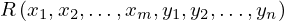
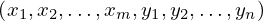

Common R__x_1_to_m_y_1_to_n of type Function¶
from the theory of proveit.core_expr_types¶
In [1]:
import proveit
# Automation is not needed when only building an expression:
proveit.defaults.automation = False # This will speed things up.
proveit.defaults.inline_pngs = False # Makes files smaller.
%load_expr # Load the stored expression as 'stored_expr'
# import the special expression
from proveit.core_expr_types import R__x_1_to_m_y_1_to_n
In [2]:
# check that the built expression is the same as the stored expression
assert R__x_1_to_m_y_1_to_n == stored_expr
assert R__x_1_to_m_y_1_to_n._style_id == stored_expr._style_id
print("Passed sanity check: R__x_1_to_m_y_1_to_n matches stored_expr")
In [3]:
# Show the LaTeX representation of the expression for convenience if you need it.
print(stored_expr.latex())
In [4]:
stored_expr.style_options()
In [5]:
# display the expression information
stored_expr.expr_info()
| core type | sub-expressions | expression | |
|---|---|---|---|
| 0 | Operation | operator: 1 operands: 2 |  |
| 1 | Variable |  | |
| 2 | ExprTuple | 3, 4 |  |
| 3 | ExprRange | lambda_map: 5 start_index: 8 end_index: 6 |  |
| 4 | ExprRange | lambda_map: 7 start_index: 8 end_index: 9 |  |
| 5 | Lambda | parameter: 15 body: 10 |  |
| 6 | Variable |  | |
| 7 | Lambda | parameter: 15 body: 11 |  |
| 8 | Literal |  | |
| 9 | Variable |  | |
| 10 | IndexedVar | variable: 12 index: 15 |  |
| 11 | IndexedVar | variable: 13 index: 15 |  |
| 12 | Variable |  | |
| 13 | Variable |  | |
| 14 | ExprTuple | 15 |  |
| 15 | Variable |  |